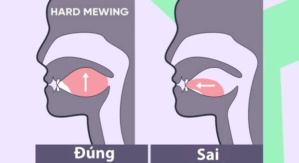

PSL Face Rating của mình là real hơn cả glow max fr
Đây là trang lời khuyên cho các bạn muốn cải thiện điểm PSL của mình!
Và mik sẽ nói về chung vì ko thể bt dc ae như nào 
Ae cần học cách đặt tư thế lưỡi mewing có thể lên mạng để xem 
Ăn uống healthy, tránh xa đồ ăn nhanh hay đồ dầu mỡ.
Chăm sóc da mặt, tránh nắng và sử dụng kem chống nắng.
Thường xuyên tập thể dục để duy trì sức khỏe và vóc dáng.
Ngủ đủ giấc và tránh stress để giữ cho cơ thể và tinh thần khỏe mạnh.
Hạn chế sử dụng điện thoại và máy tính quá nhiều để tránh ảnh hưởng đến mắt và da.
Quan trọng nhất là haircut ae nhé!
Và mik sẽ nói trước về cách sống hay sao đó nhưng các bài tập thì ae cần lựa chọn kĩ càng phù hợp với khuôn mặt của mình nhé!